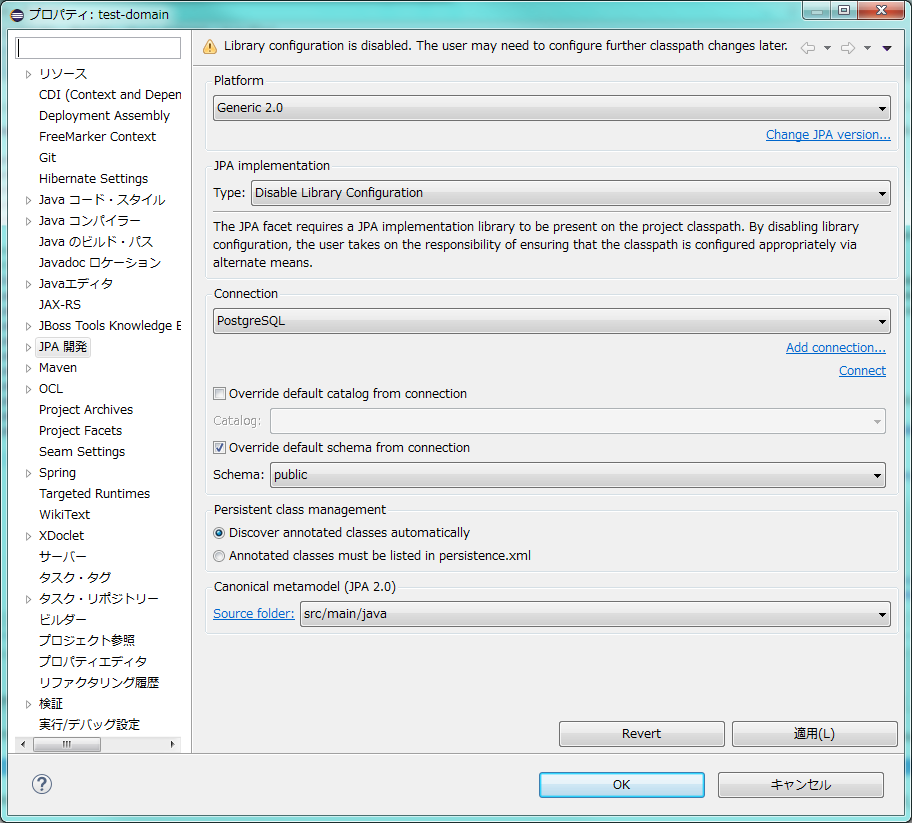

多対多の関係テーブルにおけるデータ取得¶
CriteriaAPI・JPQL・NativeSQLを利用した検索¶
ユーザとグループなど、モデル間の関連実体として、「所属」という関係性を挟んで、多対多の関連を持つデータが存在する。 こうしたエンティティは、Javaオブジェクト上ではお互いをリストで保持するような形で相互のオブジェクト参照を保持するが、 リレーショナルデータベース上では、相互の関連を多対1、1対多の構成となるように所属テーブルを作成することが一般的である。

こうしたデータに対して、SELECTを実施する場合は、単体テーブルにおけるデータ取得とは異なり、検索条件が色々なテーブルに跨るケースが多くなる。 JPAでは、それぞれCriteria API、JPQL、NativeSQLによる実装オプションを提供しているが、それぞれメリットデメリットがあり、 データ取得する対象や、検索条件などによっても適切な方法が異なる。処理の内容を鑑みて適切な手法を選択すること。
典型的なパターンとして、以下の通り、グループIDをキーにして、そのグループに所属するユーザデータを取得する場合で、 Criteria API、JPQL、NativeSQLで実装する場合のパターンを示す。
例) 特定のグループに所属するユーザを検索する場合
test-javaee6-ejb org.debugroom.test.domain.service.impl.ejb.dbaccess.OneToManySelectServiceImpl
1 2 3 4 5 6 7 8 9 10 11 12 13 14 15 16 17 18 19 20 21 22 23 24 25 | package org.debugroom.test.domain.service.impl.ejb.dbaccess;
import java.util.List;
import javax.ejb.EJB;
import javax.ejb.Stateless;
import org.debugroom.test.domain.model.Group;
import org.debugroom.test.domain.model.User;
import org.debugroom.test.domain.repository.UserRepository;
import org.debugroom.test.domain.repository.GroupRepository;
import org.debugroom.test.domain.service.dbaccess.ManyToManySelectService;
@Stateless
public class ManyToManySelectServiceImpl implements ManyToManySelectService{
@EJB
UserRepository userRepository;
@Override
public List<User> getUsers(Group group) {
return userRepository.findByGroupId(group.getGroupId());
}
}
|
test-javaee6-ejb org.debugroom.test.domain.repository.impl.jpa.UserRepositoryImpl
1 2 3 4 5 6 7 8 9 10 11 12 13 14 15 16 17 18 19 20 21 22 23 24 25 26 27 28 29 30 31 32 33 34 35 36 37 38 39 40 41 42 43 44 45 46 47 48 49 50 51 52 53 54 55 56 57 58 59 60 61 62 63 64 65 66 67 68 69 70 71 72 73 74 75 76 77 | package org.debugroom.test.domain.repository.impl.jpa;
import java.util.Date;
import java.util.List;
import javax.ejb.Stateless;
import javax.ejb.TransactionAttribute;
import javax.ejb.TransactionAttributeType;
import javax.persistence.Query;
import javax.persistence.criteria.CriteriaBuilder;
import javax.persistence.criteria.CriteriaQuery;
import javax.persistence.criteria.Join;
import javax.persistence.criteria.Predicate;
import javax.persistence.criteria.Root;
import org.debugroom.test.domain.model.Affiliation;
import org.debugroom.test.domain.model.Affiliation_;
import org.debugroom.test.domain.model.User;
import org.debugroom.test.domain.model.User_;
import org.debugroom.test.domain.model.Group;
import org.debugroom.test.domain.repository.UserRepository;
@Stateless
@TransactionAttribute(TransactionAttributeType.REQUIRED)
public class UserRepositoryImpl extends GenericDaoImpl<User, String> implements UserRepository{
// Native Queryを使用してデータ取得するパターン
@SuppressWarnings("unchecked")
public List<User> findByGroupIdUsingNativeQuery(String groupId){
// 可読性のため、文字列を+で連結しているが、実装する際はStringBuilderで組み立てること。
// entityManager.createNativeQuery()メソッドでは戻り値の型を指定しておくこと。
// 指定しない場合は、返却値のオブジェクトがObject[]型で返されるため、JSF上で、NumberFormatExceptionが発生する可能性がある。
Query query = entityManager.createNativeQuery(
"SELECT u.user_id, u.is_login, u.last_updated_date_and_time, u.user_name, u.ver "
+ "FROM ( DUSER u "
+ "INNER JOIN AFFILIATION a ON u.user_id = a.user_id ) "
+ "INNER JOIN GRP g ON a.group_id = g.group_id "
+ "WHERE g.group_id = ?1 ", User.class); // <= 戻り値の型を必ず指定しておくこと。
// パラメータをセットする。キーワード指定はできないので注意。
query.setParameter(1, groupId);
return (List<User>)query.getResultList();
}
// Criteria APIを使用してデータ取得するパターン
public List<User> findByGroupIdUsingCriteriaAPI(String groupId){
// CriteriaBuilderでクエリを組み立てる。
CriteriaBuilder criteriaBuilder = entityManager.getCriteriaBuilder();
// 戻り値の型を指定してQueryオブジェクトを生成する。
CriteriaQuery<User> query = criteriaBuilder.createQuery(User.class);
// 結合の基点となるテーブルを指定する
Root<User> root = query.from(User.class);
// 結合するテーブルと、結合時のキーとなる参照を指定する。指定は、Canonical Metamodelクラスの属性を利用する※1
Join<User, Affiliation> joinAffiliation = root.join(User_.affiliations);
// 結合するテーブルと、結合時のキーとなる参照を指定する。指定は、Canonical Metamodelクラスの属性を利用する※1
Join<Affiliation, Group> joinGroup = joinAffiliation.join(Affiliation_.grp);
// データ取得する条件を指定する。4.
Predicate predicate = criteriaBuilder.equal(joinGroup.get("groupId"), groupId);
// クエリに結合条件とデータ取得条件をセットして実行する。
query.select(root);
query.where(predicate);
return entityManager.createQuery(query).getResultList();
}
// JPQLを使用してデータ取得するパターン
@SuppressWarnings("unchecked")
public List<User> findByGroupIdUsingJPQL(String groupId){
// 可読性のため、文字列を+で連結しているが、実装する際はStringBuilderで組み立てること。
Query query = entityManager.createQuery(
"SELECT u FROM User u "
+ "JOIN u.affiliations a "
+ "JOIN a.grp g "
+ "WHERE g.groupId = :groupId");
// パラメータ指定する。
query.setParameter("groupId", groupId);
return (List<User>)query.getResultList();
}
}
|
このとき、発行するSQLは、基本的にはいずれも同じで以下のようになる。
1 2 3 4 5 6 7 8 9 10 11 12 13 14 15 16 17 18 19 20 21 22 23 24 25 26 27 | /* JPQLとCriteriaAPIで発行されるSQL */
select
user0_.user_id as user_id1_5_,
user0_.is_login as is_login2_5_,
user0_.last_updated_date_and_time as last_upd3_5_,
user0_.user_name as user_nam4_5_,
user0_.ver as ver5_5_
from duser user0_
inner join Affiliation affiliatio1_
on user0_.user_id=affiliatio1_.user_id
inner join grp group2_
on affiliatio1_.group_id=group2_.group_id
where group2_.group_id=?
/* Nativeで発行されるSQL(基本そのまま) */
SELECT
u.user_id,
u.is_login,
u.last_updated_date_and_time,
u.user_name,
u.ver
FROM ( DUSER u
INNER JOIN AFFILIATION a
ON u.user_id = a.user_id )
INNER JOIN GRP g
ON a.group_id = g.group_id
WHERE g.group_id = ?
|
各パターンにおけるメリットデメリット¶
それぞれのメリットデメリットは以下の通りである。
| Method | Pros | Cons |
| Native SQL |
|
|
| Criteria API |
|
|
| JPQL |
|
|
- ※1 Criteria APIでは、検索条件の指定には、Canonical MetaModelによるクラスの作成が必要な場合がある。必要に応じて参照すること。
- https://docs.oracle.com/javaee/6/tutorial/doc/gjiup.html https://docs.jboss.org/hibernate/orm/5.0/topical/html/metamodelgen/MetamodelGenerator.html http://www.slideshare.net/OracleMiddleJP/the-detail-of-jpa-20?ref=http://yoshio3.com/2011/12/19/java-persistence-api-for-begineers/
Userクラスにおける、Canonical MetaModelクラスは以下の通りである。
test-javaee6-domain org.debugroom.test.domain.model.User_
1 2 3 4 5 6 7 8 9 10 11 12 13 14 15 16 17 18 19 20 21 22 | package org.debugroom.test.domain.model;
import java.util.Date;
import javax.annotation.Generated;
import javax.persistence.metamodel.ListAttribute;
import javax.persistence.metamodel.SingularAttribute;
import javax.persistence.metamodel.StaticMetamodel;
@Generated(value="Dali", date="2016-03-28T16:08:39.270+0900")
@StaticMetamodel(User.class)
public class User_ {
public static volatile SingularAttribute<User, String> userId;
public static volatile SingularAttribute<User, Boolean> isLogin;
public static volatile SingularAttribute<User, Date> lastUpdatedDateAndTime;
public static volatile SingularAttribute<User, String> userName;
public static volatile SingularAttribute<User, Integer> ver;
public static volatile ListAttribute<User, Address> addresses;
public static volatile ListAttribute<User, Affiliation> affiliations;
public static volatile ListAttribute<User, Credential> credentials;
public static volatile ListAttribute<User, Email> emails;
public static volatile ListAttribute<User, Phone> phones;
}
|
なお、Eclipseでは以下の通りの設定を変更することで、Canonical MetaModelクラスを自動生成することができる。
副問合せを用いたデータ取得¶
以下の通り、グループIDをキーにして、そのグループに所属しないユーザデータを取得する場合で、副問合せを使用して Criteria API、JPQL、NativeSQLで実装する場合のパターンを示す。
例) 指定したグループに所属しないユーザを、副問合せを使用して検索する場合
test-javaee6-ejb org.debugroom.test.domain.repository.impl.jpa.UserRepositoryImpl
1 2 3 4 5 6 7 8 9 10 11 12 13 14 15 16 17 18 19 20 21 22 23 24 25 26 27 28 29 30 31 32 33 34 35 36 37 38 39 40 41 42 43 44 45 46 47 48 49 50 51 52 53 54 55 56 57 58 59 60 61 62 63 64 65 66 67 68 69 70 71 72 73 74 75 76 77 78 79 80 81 82 83 84 85 | package org.debugroom.test.domain.repository.impl.jpa;
import java.util.List;
import javax.ejb.Stateless;
import javax.ejb.TransactionAttribute;
import javax.ejb.TransactionAttributeType;
import javax.persistence.Query;
import javax.persistence.criteria.CriteriaBuilder;
import javax.persistence.criteria.CriteriaQuery;
import javax.persistence.criteria.Join;
import javax.persistence.criteria.Path;
import javax.persistence.criteria.Predicate;
import javax.persistence.criteria.Root;
import javax.persistence.criteria.Subquery;
import org.debugroom.test.domain.model.Affiliation;
import org.debugroom.test.domain.model.Affiliation_;
import org.debugroom.test.domain.model.User;
import org.debugroom.test.domain.model.Group;
import org.debugroom.test.domain.model.User_;
import org.debugroom.test.domain.repository.UserRepository;
@Stateless
@TransactionAttribute(TransactionAttributeType.REQUIRED)
public class UserRepositoryImpl extends GenericDaoImpl<User, String> implements UserRepository{
// Native Queryを使用してデータ取得するパターン
@SuppressWarnings("unchecked")
public List<User> findNotIncludingGroupUsingNativeSQL(String groupId){
// 可読性のため、文字列を+で連結しているが、実装する際はStringBuilderで組み立てること。
// entityManager.createNativeQuery()メソッドでは戻り値の型を指定しておくこと。
// 指定しない場合は、返却値のオブジェクトがObject[]型で返されるため、JSF上で、NumberFormatExceptionが発生する可能性がある。
Query query = entityManager.createNativeQuery(
"SELECT u.* FROM DUSER u "
+ "WHERE u.user_id NOT IN ( "
+ "SELECT u.user_id "
+ "FROM ( DUSER u "
+ "INNER JOIN AFFILIATION a ON u.user_id = a.user_id ) "
+ "INNER JOIN GRP g ON a.group_id = g.group_id "
+ "WHERE g.group_id = ?1 )", User.class);
query.setParameter(1, groupId);
return (List<User>)query.getResultList();
}
// Criteria APIを使用してデータ取得するパターン
public List<User> findNotIncludingGroupUsingCriteriaAPI(String groupId){
CriteriaBuilder criteriaBuilder = entityManager.getCriteriaBuilder();
CriteriaQuery<User> query = criteriaBuilder.createQuery(User.class);
Root<User> root = query.from(User.class);
Path<Object> path = root.get("userId");
query.select(root);
// CriteriaBuilderでサブクエリを組み立てる。
// 通常のクエリを組み立てる方法と違いはない。
Subquery<User> subQuery = criteriaBuilder.createQuery().subquery(User.class);
Root<User> subQueryRoot = subQuery.from(User.class);
Join<User, Affiliation> subQueryJoinAffiliation = subQueryRoot.join(User_.affiliations);
Join<Affiliation, Group> subQueryJoinGroup = subQueryJoinAffiliation.join(Affiliation_.grp);
Predicate subQueryPredicate = criteriaBuilder.equal(subQueryJoinGroup.get("groupId"), groupId);
subQuery.select(subQueryRoot.get("userId"));
subQuery.where(subQueryPredicate);
//サブクエリを条件として設定する。
query.where(criteriaBuilder.not(criteriaBuilder.in(path).value(subQuery)));
return entityManager.createQuery(query).getResultList();
}
// JPQLを使用して、データ取得するパターン
@SuppressWarnings("unchecked")
public List<User> findNotIncludingGroupUsingJPQL(String groupId){
Query query = entityManager.createQuery(
"SELECT u from User u "
+ "WHERE u.userId not in ( "
+ "SELECT u.userId FROM User u "
+ "JOIN u.affiliations a "
+ "JOIN a.grp g "
+ "WHERE g.groupId = :groupId )");
query.setParameter("groupId", groupId);
return (List<User>)query.getResultList();
}
}
|
このとき、以下のようなSQLが発行される。
1 2 3 4 5 6 7 8 9 10 11 12 13 14 15 16 17 | select
user0_.user_id as user_id1_5_,
user0_.is_login as is_login2_5_,
user0_.last_updated_date_and_time as last_upd3_5_,
user0_.user_name as user_nam4_5_,
user0_.ver as ver5_5_
from duser user0_
where user0_.user_id not in (
select
user1_.user_id
from duser user1_
inner join Affiliation affiliatio2_
on user1_.user_id=affiliatio2_.user_id
inner join grp group3_
on affiliatio2_.group_id=group3_.group_id
where group3_.group_id=?
)
|